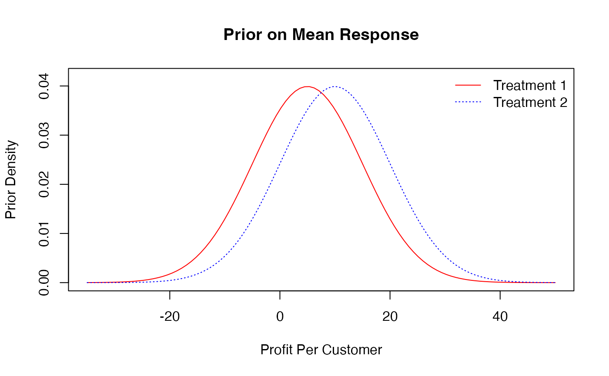
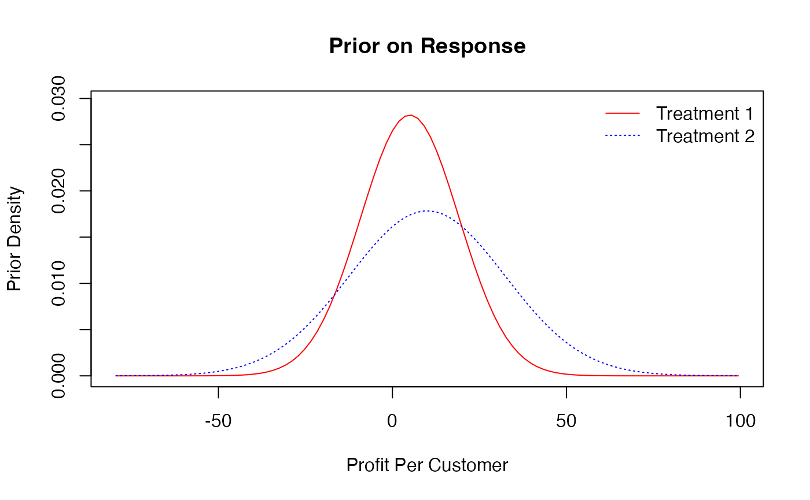

Test and Roll Package Vignette
Based off of “Profit-Maximizing A/B tests’’ by Elea McDonell Feit and Ron Berman.
Maxine Fang & Bolun Xiao
testandrollvignette.Rmd1. Introduction
1.1 About Test & Roll
The Test & Roll Package implements the methods in the paper “Profit-maximizing a/b tests” by Elea McDonnell Feit and Ron Berman.
Source: Feit, E. M. & Berman, R. (2018). Profit-maximizing a/b tests. Available at SSRN.
Test & Roll (tactical A/B testing) describes an experimentation process in marketing where a subset of customers are randomly assigned to a treatment and customer response data is first collected in a “test” stage. In the “roll” stage that follows, marketers deploy one treatment to all remaining customers based on the test results.
Marketers often use A/B testing as a tool to compare marketing treatments in a test stage and then deploy the better-performing treatment to the remainder of the consumer population. While these tests have traditionally been analyzed using hypothesis testing, we re-frame them as an explicit trade-off between the opportunity cost of the test (where some customers receive a sub-optimal treatment) and the potential losses associated with deploying a sub-optimal treatment to the remainder of the population.
Profit-maximizing Test & Roll has several advantages over traditional hypothesis testing (see paper for more).
(1) The typical significance levels (alpha) in hypothesis tests which aim to limit Type I errors have little consequence for profit, assuming no deployment costs. If the null is mistakenly rejected, but both treatments yield identical effects, the same profit will be earned regardless of which treatment is deployed. Because of the profit trade-off between test-stage learning and roll-stage earning, conservative sample sizes based on null hypothesis testing lower overall expected profit, by exposing too many people to the less effective treatment in the test.
(2) The population available for testing and deploying is often limited, but the recommended sample size does not take this constraint into account. In online advertising experiments where effects are often small (but profitable), the recommended sample size may be larger than the size of the population itself. Yet when the population is limited, smaller tests that will never reach statistical significance can still have substantial benefit in improving expected profit. With profit-maximizing test and roll, improved performance is achieved because profit-maximizing tests identify the best performing treatment with high probability when treatment effects are large; the lost profit (regret) from errors in treatment selection is small when treatment effects are small.
The Test & Roll package can be used to calculate test sizes as well as resulting profits under a variety of methods (hypothesis testing, profit-maximization, and Thomson Sampling). Note that the profit-maximizing test size is substantially smaller than typically recommended for a hypothesis test, particularly when the response is noisy or when the total population is small.
1.2 Installation
library(devtools)
install_github('testandroll/testandroll.pkg')
library(testandroll.pkg)
#Extra installations for Rmd to knit
install.packages('doParallel', repos='http://cran.us.r-project.org')##
## The downloaded binary packages are in
## /var/folders/49/6l50y03s1rj1g1yd2h6jz2lc0000gn/T//Rtmp6yllQ3/downloaded_packages
library(doParallel)
registerDoParallel(cores=4) #Determine the the number of cores to use for parallel execution (e.g., 4)1.3 Computing priors from data
Basic method:
Priors represent beliefs about your data before you conduct the experiment.
The testandroll package contains sample data of the proportions of customers who visited a website for longer than 15 minutes. months.means is a vector of length 12 containing the average proportions for each month. To find “\(\mu\),” simply take the means of the mean responses from the data sets and to find “\(\sigma\),” simply take the standard deviation of the mean responses.
months.means## January February March April May June July August
## 0.6103005 0.4089727 0.5021437 0.6009944 0.6053015 0.5904040 0.6090105 0.5090350
## September October November December
## 0.4078861 0.4967330 0.5061300 0.6154330## [1] 0.5385287
sigma## [1] 0.0774171.4 Summary of functions
Function parameters:
“n” - sample sizes
“N” - total deployment population
“s” - the known standard deviations of the outcome
“\(\mu\)” - means of the priors on the response
“\(\sigma\)” - standard deviations of the priors on the response
“K” - number of arms (treatments)
“R” - number of simulation repetitions
“\(n_{vals}\)” - possible sample size values
Function purposes:
Usage for 2-arm tests
test_size_nht() - computes test sizes under hypothesis testing
test_size_nn() - computes profit-maximizing test sizes under test & roll
profit_nn() - computes profit under profit-maximizing tests
profit_perfect_nn() - computes profit with perfect information
error_rate_nn() - computes rate of incorrect deployments
Usage for K-arm tests (with simulation)
test_size_nn_sim() - computes profit-maximizing test sizes for a multi-armed test and roll
one_rep_test_size() - utility function used in test_size_nn_sim() to simulate one set of potential outcomes
profit_nn_sim() - computes the per-customer profit for test & roll with K arms
one_rep_profit() - utility function used in function ‘profit_nn_sim()’ to simulate one set of potential outcomes
test_eval_nn() - provides summary statistics of a test and roll plan
Section 4) Visualizing prior effects on profits and mean response
plot_prior_mean_resp_nn() - plot prior densities against mean response (profit per customer)
plot_prior_resp_nn() - plot prior densities against response (profit per customer)
plot_prior_effect_nn() - plot prior densities against treatment effect (difference in profit per customer)
2. Usage for 2-arm tests
2.1 Computing profit-maximizing test sizes (2-arm tests)
test_size_nht() computes test sizes under hypothesis testing.
test_size_nht(s=c(0.5,0.10), d=0.2, conf=0.95, power=0.8, N=NULL)## [1] 58.86660 11.77332
test_size_nht(s=0.5, d=0.2, conf=0.95, power=0.8, N=NULL)## [1] 98.111Takes in parameters:
“s” - vector of length 1 (symmetric) or 2 (asymmetric) indicating response standard deviation(s)
“d” - minimum detectable difference between treatments
“conf” - 1 - type I error rate
“power” - 1 - type II error rate
“N” - finite deployment population, if NULL no finite population correction is used
and returns a vector containing the recommended sample sizes
For the symmetric case \(s_1=s_2=s\), the recommended sample size is calculated using \(n_1 = n_2 \approx (z_{1-\alpha/2} + z_\beta)^2 (\frac{2 s^2}{d^2})\) where \(\alpha\) is 1-conf and \(\beta\) is the power. For the asymmetric case \(s_1 \neq s_2\), the recommended sample sizes are calculated using \(n_1=(z_{1-\alpha/2} + z_\beta)^2 (\frac{{s_1}^2+s_1s_2}{d^2})\) and \(n_2=(z_{1-\alpha/2} + z_\beta)^2 (\frac{s_1s_2+{s_2}^2}{d^2})\). With finite population correction, \(n_1=\frac{(z_{1-\alpha/2} + z_\beta)^2 (N) (s_1^2+s_1 s_2)}{d^2 (N-1)+(z_{1-\alpha/2} + z_\beta)^2(s_1+s_2)^2}\) and \(n_1=\frac{(z_{1-\alpha/2} + z_\beta)^2 (N) (s_1 s_2+s_2^2)}{d^2 (N-1)+(z_{1-\alpha/2} + z_\beta)^2(s_1+s_2)^2}\)
test_size_nn() computes the profit-maximizing test size for test and roll with 2 arms
test_size_nn(N=10000, s=.1, mu=c(.7,.7), sigma=c(.05,.05))## [1] 97.04499 97.04499
test_size_nn(N=10000, s=c(.1,.2), mu=c(.7,.7), sigma=c(.05,.05))## [1] 97.38121 187.41676Takes in parameters:
“N” - size of deployment population
“s” - vector of length 2 containing the standard deviations of the outcome
“\(\mu\)” - vector of length 2 containing the means of the prior on the mean response
“\(\sigma\)” vector of length 2 containing the standard deviations of the prior on the mean response
and returns a vector containing the sample sizes
For the symmetric case \(s_1=s_2=s\), the recommended sample size is calculated using \(n_1=n_1= \frac{\sqrt{9\sigma^4 + 4 n \sigma^2 \sigma_0^2} - \frac{3}{4} \sigma^2}{4\sigma_0^2}\). For the asymmetric case, the recommended sample size is calculated using the optim() function to find the sample sizes which maximize profit_nn().
2.2 Computing profits and errors under different testing methods (2-arm tests)
profit_nn() computes the per-customer profit for test & roll with 2 arms
## [1] 0.8104432## [1] 0.8093503Takes in parameters:
“n” - vector of length 2 containing the sample sizes
“N” - size of deployment population
“s” - vector of length 2 containing the known standard deviations of the outcome
“\(\mu\)” - vector of length 2 containing the means of the prior on the mean response
“\(\sigma\)” - vector of length 2 containing the standard deviations of the prior on the mean response
“log_n” - whether or not log(n) is an input rather than n (to avoid negative solutions), ‘TRUE’ or ‘FALSE’
and returns a numeric that is the per-customer profit for N customers
For the symmetric case, the deploy stage profit is calculated using \((N - n_1 - n_2) \left[ \mu + \frac{\sqrt{2} \sigma^2}{\sqrt{\pi} \sqrt{2\sigma^2 + \frac{n_1 + n_2}{n_1 n_2}s^2} }\right]\) and the test stage profit is calculated with \(\mu_1(n_1+n_2)\). For the asymmetric case, the deploy stage profit is calculated using \((N-n_1-n_2) \left[\mu_1 + e\Phi\left(\frac{e}{v}\right) + v\phi\left(\frac{e}{v}\right)\right]\) where \(e=(\mu_2 - \mu_1)\) and \(v = \sqrt{\frac{\sigma_1^4}{\sigma_1^2+s_1^2/n_1}+\frac{\sigma_2^4}{\sigma_2^2+s_2^2/n_2}}\). The test stage profit is \(\mu_1n_1 + \mu_2n_2\)
profit_perfect_nn() computes the profit with perfect information
profit_perfect_nn(mu=.7, sigma=.02)## [1] 0.7112838Takes in parameters:
“\(\mu\)” - means of the prior on the mean response
“\(\sigma\)” - standard deviations of the prior on the mean response
and returns a numeric that is the per-customer profit with perfect information
For the symmetric case, the perfect information profit is calculated using \(\left(\mu + \frac{\sigma}{\sqrt{\pi}}\right) N\). The asymmetric case has not yet been implemented.
error_rate_nn() computes the rate of incorrect deployments
error_rate_nn(n=100, s=.5, sigma=.2)## [1] 0.07797913
error_rate_nn(n=c(100,200), s=.5, sigma=.2)## [1] 0.0678686Takes in parameters:
“n” - vector of length 2 containing the sample sizes
“s” - vector of length 1 (symmetrical) containing the standard deviations of the outcome
“\(\sigma\)” - vector of length 1 (symmetrical) containing the standard deviations of the prior on the mean response
and returns a numeric that is the error rate
With symmetric normal priors, the error rate is calculated using \(\frac{1}{4} - \frac{1}{2 \pi}\arctan\left(\frac{\sqrt{2}\sigma}{s} \sqrt{\frac{n_1 n_2}{n_1+n_2}}\right)\). The asymmetric case has not yet been implemented.
3. Usage for K-arm tests (with simulation)
3.1 Computing profit-maximizing test sizes (K-arm tests) with simulation
test_size_nn_sim() Computes the profit-maximizing test size and profits for a multi-armed test & roll
test_size_nn_sim(N=1000, s=.1, mu=.1, sigma=.05, K=2, R=1000)## $n
## [1] 22 22
##
## [[2]]
## [1] 0.1234488Takes in parameters:
“N” - deployment population
“s” - standard deviations of the response (length 1(symmetric) or K)
“\(\mu\)” - vector of length K containing means of the priors on the mean response
“\(\sigma\)” - vector of length K containing the standard deviations of the priors on the mean response
“K” - number of arms (treatments)
“R” - number of simulation replications
and returns a list with the sample sizes and expected profit per customer
For the symmetric case, the function creates a vector containing all possible values of n (floor(N/K)-1). Then, one_rep_test_size() is used to calculate the profits for each of the values of n. The values of n that maximize the profit are then chosen as the sample sizes for that particular repetition. The asymmetric case has not yet been implemented.
one_rep_test_size() (utility function for test_size_nn_sim()) simulates one set of potential outcomes
one_rep_test_size(1:(floor(10/2)-1), N=10, s=10, mu= 20, sigma=10, K=2)## n profit
## [1,] 1 220.4618
## [2,] 2 206.4567
## [3,] 3 178.1974
## [4,] 4 163.6219Takes in parameters:
“\(n_{vals}\)” - potential values for n
“N” - deployment population
“s” - standard deviations of the outcome (vector length 1 or K) “\(\mu\)” - means of the priors on the mean response (vector length 1 or K) “\(\sigma\)” - standard deviations of the priors on the mean response (vector length 1 or K) “K” - number of arms (treatments)
and returns a 2-column matrix with values of n in the first column and profits in the second column
The function picks a true mean for each arm and then simulates N observations for each of the K arms based off of that mean. Then, the arm with highest posterior mean is chosen and the profit is calculated for each potential value of n (n_vals).
3.2 Computing profits and errors under different testing methods (K-arm tests) with simulation
profit_nn_sim() computes the per-customer profit for test & roll with K arms
profit_nn_sim(n=c(100,200,300), N=1000, s=c(.1,.2,.3), mu=c(.1,.2,.3), sigma=c(.01,.03,.05), K=3, TS=FALSE, R=10)## $profit
## perfect_info test_roll thom_samp
## exp_profit 0.3082823 0.2659775 NA
## 5% 0.2164081 0.2010297 NA
## 95% 0.3931500 0.3172994 NA
##
## $regret
## perfect_info test_roll thom_samp
## exp_regret 0 0.12494950 NA
## 5% 0 0.01470893 NA
## 95% 0 0.19285484 NA
##
## $error_rate
## [1] 0.2
##
## $profit_draws
## perfect_info test_roll thom_samp error
## 1 403.5256 324.7588 NA 0
## 2 223.3182 206.7178 NA 1
## 3 222.6138 196.3757 NA 0
## 4 352.4217 298.2236 NA 0
## 5 261.9600 238.3319 NA 0
## 6 211.3307 218.5320 NA 1
## 7 364.3239 306.3331 NA 0
## 8 380.4687 308.1824 NA 0
## 9 338.1711 284.1953 NA 0
## 10 324.6891 278.1243 NA 0
##
## $regret_draws
## perfect_info test_roll thom_samp
## 1 0 0.19519648 NA
## 2 0 0.07433492 NA
## 3 0 0.11786358 NA
## 4 0 0.15378757 NA
## 5 0 0.09019733 NA
## 6 0 -0.03407598 NA
## 7 0 0.15917376 NA
## 8 0 0.18999284 NA
## 9 0 0.15961096 NA
## 10 0 0.14341350 NATakes in parameters:
“n” - sample sizes for test & roll (vector of length 1 or K)
“N” - deployment population
“s” - standard deviations of the outcome (vector of length 1 or K)
“\(\mu\)” - means of the priors on the mean response (vector of length 1 or K)
“\(\sigma\)” - standard deviations of the priors on the mean response (vector of length 1 or K)
“K” - number of arms (2 by default)
“TS” - whether or not to run Thomson sampling, ‘TRUE’ or ‘FALSE’ (FALSE by default)
“R” - number of simulation replications (1000 by default)
and returns a list containing the profit, regret, and error rates
The function uses one_rep_profit() to simulate each repetition. Then, the summary values are combined into a list. test_size_nn() or test_size_nn_sim() can be used to find the profit-maximizing sample sizes (n) to input into the function.
one_rep_profit() (utility function for profit_nn_sim()) simulates one set of potential outcomes, draws a true mean for each arm and generates N observations from each arm
one_rep_profit(n=c(100,100), N=1000, s=c(.1,.1), mu=c(.1,.1), sigma=c(.05,.05), K=2, TS=FALSE)## perfect_info test_roll thom_samp error
## 121.6119 121.7183 NA 0.0000
one_rep_profit(n=c(100,200,300), N=1000, s=c(.1,.2,.3), mu=c(.1,.2,.3), sigma=c(.01,.03,.05), K=3, TS=FALSE)## perfect_info test_roll thom_samp error
## 306.4797 252.0384 NA 0.0000Takes in parameters:
“n” - sample sizes for test & roll (vector of length 1 or K)
“N” - deployment population
“s” - standard deviations of the outcome (vector of length 1 or K)
“\(\mu\)” - means of the priors on the mean response (vector of length 1 or K)
“\(\sigma\)” - standard deviations of the priors on the mean response (vector of length 1 or K)
“K” - number of arms (2 by default)
“TS” - whether or not to run Thomson sampling, ‘TRUE’ or ‘FALSE’ (FALSE by default)
and returns the profits and error rates under perfect information, test & roll, and Thomson sampling under one simulation
The function draws a true mean for each arm based off sigma and simulates N observations for each of the K arms. The profit from perfect information is calculated by picking the arms with the highest true mean. Test and roll profit is calculated by summing the profit from the first n observations in each arm (test stage) with the profit from the selected arm (roll stage with remainder of population). For Thomson Sampling, mu and sigma are updated with every K observations (1 from each arm).
test_eval_nn() provides summary of a test & roll plan
test_eval_nn(n=c(100,100), N=1000, s=.1, mu=.1, sigma=.05)## n1 n2 profit_per_cust profit profit_test profit_deploy profit_rand
## 1 100 100 0.1221293 122.1293 20 102.1293 100
## profit_perfect profit_gain regret error_rate tie_rate
## 1 128.2095 0.7844645 0.04742351 0.06283296 0
test_eval_nn(n=c(100,200), N=1000, s=c(.1,.2), mu=c(.1,.2), sigma=c(.05,.1))## n1 n2 profit_per_cust profit profit_test profit_deploy profit_rand
## 1 100 200 0.1976957 197.6957 50 147.6957 150
## profit_perfect profit_gain regret error_rate tie_rate
## 1 212.1578 0.7673316 0.06816699 0.0317 0Takes in parameters: “n” - sample sizes for test & roll (vector of length 2) “N” - deployment population
“s” - standard deviations of the outcome (vector of length 2)
“\(\mu\)” - means of the priors on the mean response (vector of length 2)
“\(\sigma\)” - standard deviations of the priors on the mean response (vector of length 2)
and returns a data frame containing summary statistics such as profit per customer, profits from test phase, error rates, etc.
For the symmetric case, the total profit is calculated using profit_nn()*N so profit_per_cust becomes total profit/N. profit_test is calculated using \[\mu*(n_1+n_2)\]. profit_deploy is total profit - profit_test. profit_rand (from random selection) is calculated using \[mu*N\]. profit_perfect is calculated using the profit_perfect_nn() function. profit_gain is simply total profit - profit_rand. The regret is 1 - total profit/profit_perfect and represents the % lost potential profit. The error_rate is calculated as part of profit_nn_sim(). For the asymmetric case, the only results that differ are profit_test becoming \[\mu_1*n_1+\mu_1*n_2\] and profit_rand becoming \[(\mu_1+\mu_2)*.5*N\].
4. Visualizing prior effects on profits and mean response
plot_prior_mean_resp_nn() plots prior densities against mean response (profit per customer)
plot_prior_mean_resp_nn(mu=c(5,10), sigma=c(10,10))
It takes in as parameters:
“\(\mu\)” - means of the prior on the mean response
“\(\sigma\)” - standard deviations of the priors on the response
and returns a plot of the prior density against the mean response
plot_prior_resp_nn() plot prior densities against response (profit per customer)
plot_prior_resp_nn(s=c(10,20), mu=c(5,10), sigma=c(10,10))
It takes in as parameters:
“s” - the known standard deviations of the outcome
“\(\mu\)” - means of the prior on the mean response
“\(\sigma\)” - standard deviations of the priors on the response
and returns a plot of the prior density against the response
plot_prior_effect_nn() plots prior densities against treatment effect (difference in profit per customer)
plot_prior_effect_nn(mu=c(5,10), sigma=c(10,10), abs=FALSE)It takes in as parameters:
“\(\mu\)” - means of the prior on the mean response
“\(\sigma\)” - standard deviations of the priors on the response
“abs” - whether or not to take the absolute difference, ‘TRUE’ or ‘FALSE’
and returns a plot of the prior density against the treatment effect